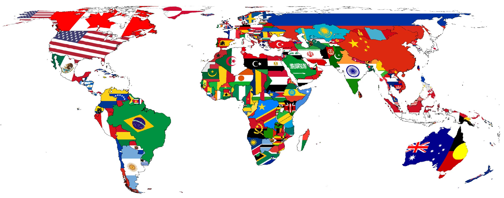

HOME
Sure, a travel experience easily makes you happier by getting you away from your daily grind.
And, if you can get away from your parents, kids, freelance work, pets, homework, piano lessons, part-time job, studying for exams or any other things possibly weighing you down, that will definitely put a smile on your face, to say the least.
However, travel makes you happier in another way, as well. According to a study by Amit Kumar, Matthew A. Killingsworth, and Thomas Gilovich from Cornell University, that money spent on doing something (called “experiential purchases”) will leave you with a longer-lasting sense of happiness than money spent on having something (called “material purchases”).
The study says that “waiting for experiences tends to be more positive than waiting for possessions.” And, it goes on to say that “people derive more happiness from the anticipation of experiential purchases and that waiting for an experience tends to be more pleasurable and exciting than waiting to receive a material good.”